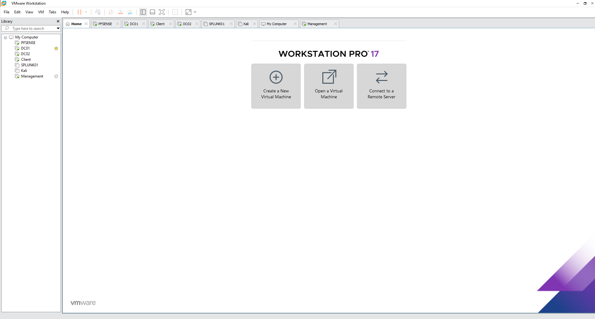
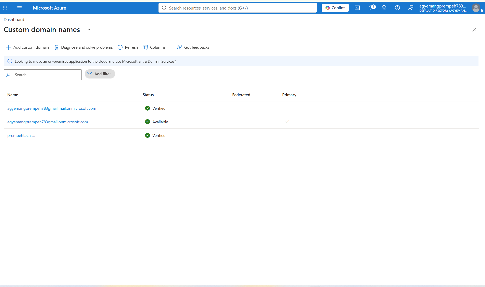
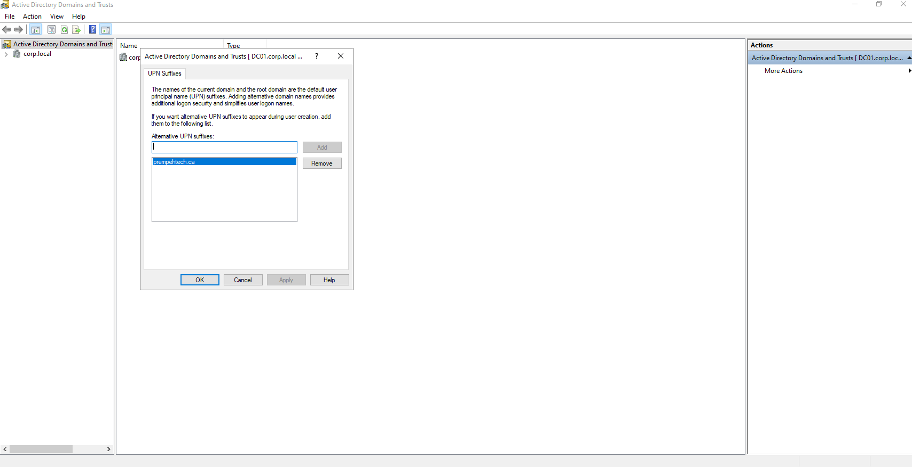
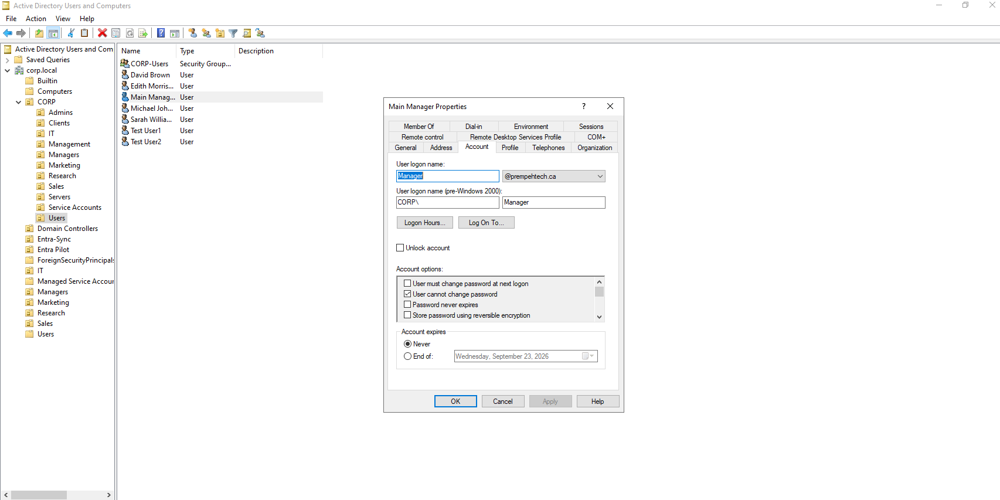
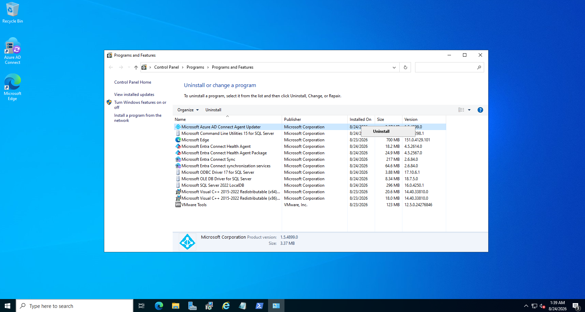
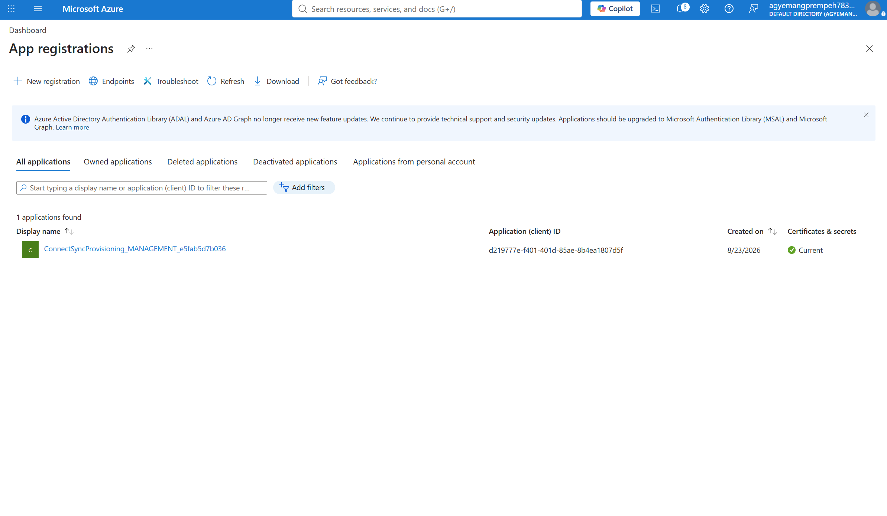
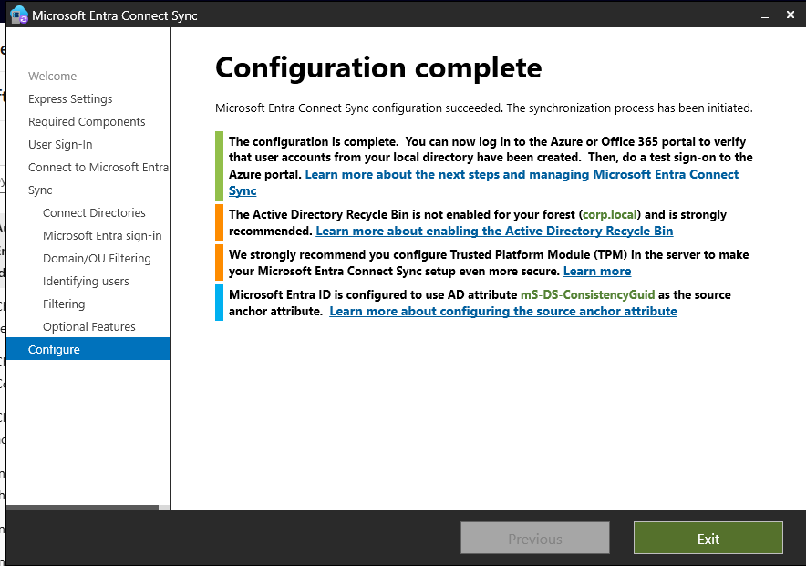
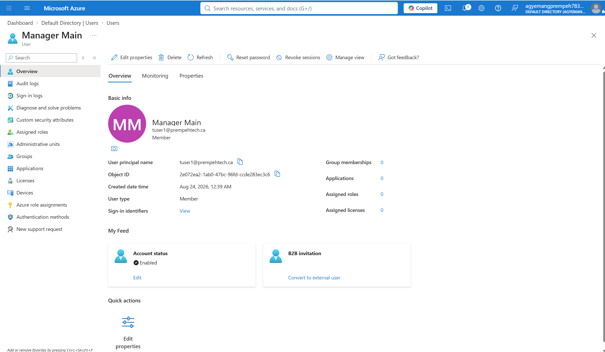
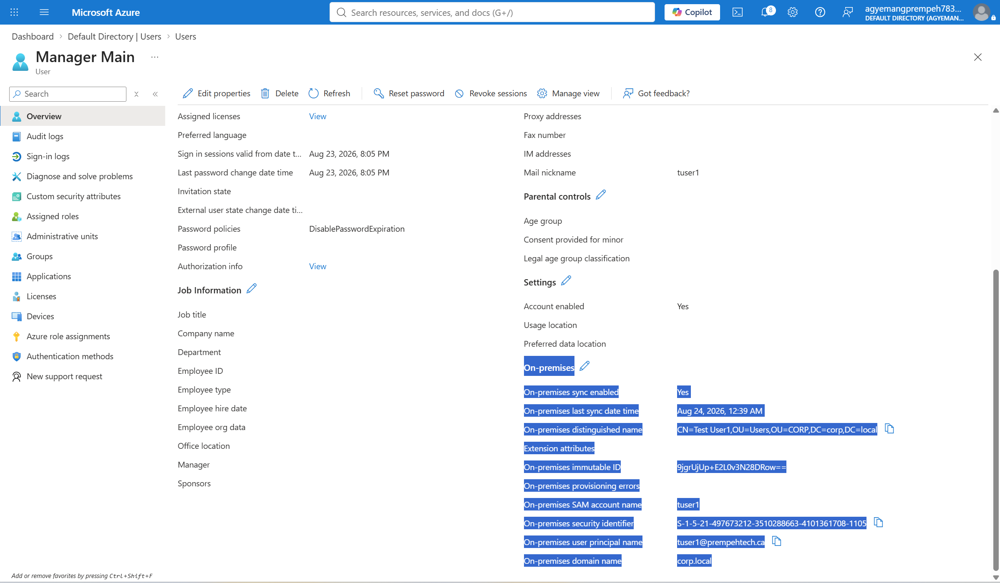
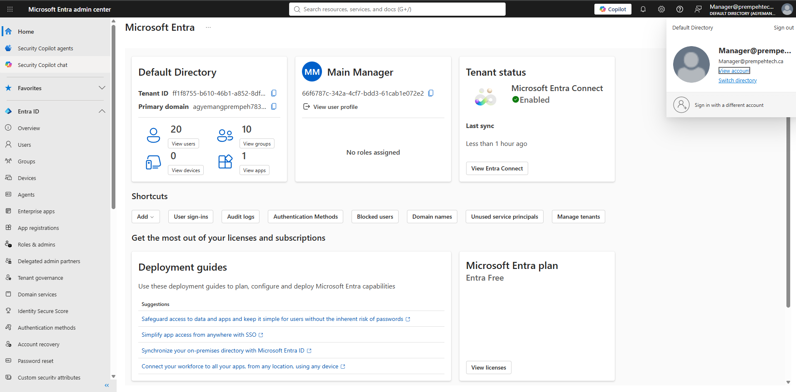

Hybrid Identity
Extended an existing on-premises Active Directory environment into Microsoft Entra ID.
MICROSOFT ENTRA ID • HYBRID IDENTITY • ACTIVE DIRECTORY • CLOUD
I designed and implemented a working hybrid identity environment connecting my existing Windows Server Active Directory infrastructure to Microsoft Entra ID. The project included public-domain integration, UPN alignment, Microsoft Entra Connect deployment, directory synchronization, identity validation, and successful cloud authentication using a synchronized on-premises account.
Extended an existing on-premises Active Directory environment into Microsoft Entra ID.
Installed and configured Microsoft Entra Connect Sync to synchronize selected Active Directory identities into the cloud tenant.
Integrated and verified prempehtech.ca for use as a cloud-compatible identity namespace.
Added prempehtech.ca as an alternative Active Directory UPN suffix for synchronized users.
Verified synchronized attributes, on-premises identity references, synchronization state, and cloud representation.
Successfully authenticated to Microsoft Entra using a synchronized on-premises identity.
HYBRID IDENTITY ARCHITECTURE
The project extends the existing corp.local Active Directory forest into Microsoft Entra ID while Active Directory remains the on-premises identity source.
Microsoft Entra Connect Sync provides the synchronization layer between the local Windows Server environment and Microsoft Entra ID.
ON-PREMISES ENVIRONMENT
VMware Workstation
|
v
+-------------------------+
| Active Directory |
| corp.local |
| |
| DC01 / DC02 |
| Users / Groups / OUs |
+-------------------------+
|
|
Alternative UPN
prempehtech.ca
|
v
+-------------------------+
| MANAGEMENT SERVER |
| |
| Microsoft Entra Connect |
| Sync |
+-------------------------+
|
|
Directory Sync
|
v
+-------------------------+
| MICROSOFT ENTRA ID |
| |
| Synchronized Identities |
| Hybrid Authentication |
| Cloud Identity |
+-------------------------+
|
v
CLOUD AUTHENTICATION
LAB INFRASTRUCTURE
The hybrid identity project was implemented inside the existing VMware-based enterprise lab rather than as an isolated cloud-only demonstration.
The environment includes Active Directory domain controllers, Windows workstations, a management server, pfSense, Splunk, and additional security systems.

IDENTITY NAMESPACE
The Active Directory forest uses the internal namespace corp.local. Because this namespace is not publicly routable, I integrated prempehtech.ca with Microsoft Entra ID.
The custom domain was verified inside the Microsoft cloud tenant so synchronized users could use a consistent, externally valid User Principal Name.

ACTIVE DIRECTORY
The on-premises domain remains corp.local, but users require a routable sign-in namespace for Microsoft Entra.
I therefore added prempehtech.ca as an alternative UPN suffix in Active Directory Domains and Trusts.

Active Directory identities were then configured to use the new routable UPN suffix.
The identity remains managed within the local corp.local directory while using @prempehtech.ca as its cloud-compatible sign-in name.

SYNCHRONIZATION PLATFORM
Microsoft Entra Connect Sync was installed on the Windows Management server to provide the synchronization bridge between Active Directory and Microsoft Entra ID.
The server contains the synchronization components and supporting Microsoft services required for hybrid directory synchronization.

The synchronization deployment also established the required cloud-side integration inside Microsoft Entra.

DIRECTORY SYNCHRONIZATION
After connecting the local Active Directory forest and Microsoft Entra tenant, Entra Connect completed its configuration and initiated synchronization.

IDENTITY VALIDATION
Successful synchronization was verified from the Microsoft Entra side rather than assuming completion of the configuration wizard meant the deployment was working.
The synchronized account appeared in the Microsoft Entra directory using the prempehtech.ca namespace.

SYNCHRONIZATION EVIDENCE
The synchronized Microsoft Entra identity retains information linking the cloud object to its original on-premises Active Directory account.
I validated synchronization status, distinguished name, SAM account name, security identifier, User Principal Name, on-premises domain name, immutable identity information, and last synchronization time.

AUTHENTICATION VALIDATION
Directory synchronization alone does not prove that the resulting identity can actually be used.
I therefore performed a cloud authentication test using the synchronized prempehtech.ca account.

END-TO-END FLOW
Active Directory
corp.local
|
|
v
On-Premises User
|
|
+---- UPN: user@prempehtech.ca
|
v
Microsoft Entra Connect Sync
|
|
+---- Directory Synchronization
|
v
Microsoft Entra ID
|
|
+---- Synchronized Attributes
|
+---- On-Premises Identity Reference
|
+---- Cloud Identity
|
v
Microsoft Cloud Authentication
VALIDATED
prempehtech.ca successfully verified
in Microsoft Entra.
VALIDATED
prempehtech.ca available as an alternative
Active Directory UPN.
VALIDATED
Microsoft Entra Connect Sync
configured successfully.
VALIDATED
On-premises Active Directory identities
synchronized to Entra.
VALIDATED
On-premises identity attributes visible
in the cloud object.
VALIDATED
Synchronized hybrid identity
successfully authenticated.
Tenant administration, identity management, synchronized identities, and cloud authentication.
User management, directory structure, UPN configuration, and identity administration.
Installation, configuration, directory synchronization, and synchronization validation.
Integration of traditional Active Directory identity infrastructure with Microsoft cloud identity.
Validated synchronization state, UPN alignment, object attributes, and cloud identity behavior.
Enterprise Windows infrastructure supporting Active Directory and Microsoft Entra Connect.
The project produced a functional hybrid identity environment connecting the on-premises Active Directory deployment to Microsoft Entra ID.
Rather than stopping at installation, I validated the complete identity path from the local Active Directory account through Microsoft Entra Connect, synchronization into the cloud directory, synchronized attribute verification, and successful cloud authentication.
Windows Server Active Directory remains the local identity source.
Microsoft Entra Connect provides the directory synchronization bridge.
Microsoft Entra receives and represents the synchronized on-premises identity.
The synchronized identity successfully authenticates to the Microsoft cloud environment.
Additional implementation details, identity configuration evidence, synchronization validation, troubleshooting notes, and supporting documentation are available in the GitHub repository.